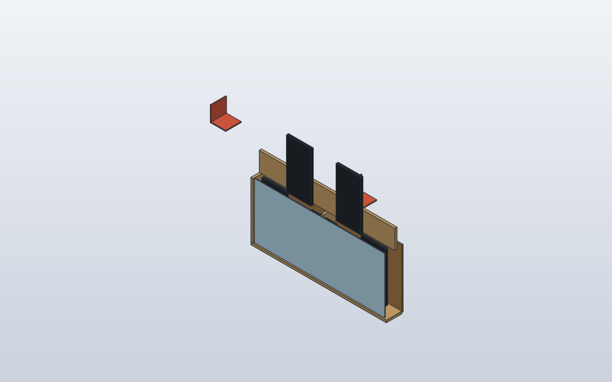

Model preview

Native SolidCraft image, matching this source revision.
Basic Box prototype with five lightweight HUB75 envelopes, 15 mm plywood sides/bottom/roof, a 9 mm back, a 4 mm window, and four provisional 3D-printed external L corner rails. The detailed rear PCB and electronic bays belong to the advanced panel model. Hardware dimensions and fit remain to be validated.
Files
Download the source and the generated command plan.
Command JSON describes CAD actions; it is not an already-saved .sc design.
Construction stages
- Create one lightweight bounding-box panel
- Place five native panel occurrences on the 160 mm grid
- Add two 15 mm side boards and bottom/roof
- Place separate 9 mm back and 4 mm window
- Place four reusable L-shaped external corner concepts
- Keep advanced HUB75 and exact bolt geometry separate
Python model
"""Upright wooden HUB75 Basic Box with five lightweight panel envelopes.
The previous model kept the screen in XY, so it appeared lying flat in
SolidCraft's normal Z-up 3D view. This uses the physical CAD axes:
X: screen width (left/right)
Y: cabinet depth (negative = viewer/front, positive = back)
Z: height (world up)
All parts stand in XZ. Five panels are grouped under HUB75Panels
as one native subassembly, while each wood component remains separate.
It is real geometry, NOT a screenshot camera fix.
Reference: Basic Box v29. Wooden opening Z=0..362, outside box
Z=-15..377. LED front plane Y=0, cabinet depth Y=-25..75,
outer back +Y. Provisional corner rails are not the final brackets.
"""
from scpf import component
from models.components.hub75_panels import HUB75Panels
from models.components.wood_box import (
SideWall as SideDefinition,
BottomBoard as BottomDefinition,
RoofBoard as RoofDefinition,
BackBoard as BackDefinition,
Window as WindowDefinition,
CornerRailConcept as CornerDefinition,
)
Side = component(SideDefinition)
Bottom = component(BottomDefinition)
Roof = component(RoofDefinition)
Back = component(BackDefinition)
Glass = component(WindowDefinition)
Corner = component(CornerDefinition)
class WoodenHub75BasicBox:
internal_width = 844.0
internal_height = 362.0
plywood = 15.0
overall_width = 874.0
overall_height = 392.0
panel_pitch = 160.0
front_depth = -25.0
cabinet_depth = 100.0
def build(self):
# One expandable native group for all five lightweight panels.
# The frame's wood pieces remain separate, editable components.
assembly = HUB75Panels(
opening_height=self.internal_height, pitch=self.panel_pitch
).build()
side_x = self.internal_width / 2 + self.plywood / 2
top_z = self.internal_height
depth_mid = self.front_depth + self.cabinet_depth / 2
# Sides stand from Z=0 to 362. Their full depth is Y=-25..75.
assembly = assembly + Side().move(x=-side_x, y=depth_mid)
assembly = assembly + Side().move(x=side_x, y=depth_mid)
# Bottom and roof are horizontal wood boards at the actual Z edges.
assembly = assembly + Bottom().move(y=depth_mid, z=-self.plywood)
# The roof extends 24 mm beyond the back of the main 100 mm cabinet.
assembly = assembly + Roof().move(y=self.front_depth + RoofDefinition.depth / 2,
z=top_z)
# Separate, upright 9 mm rear panel and 4 mm front glass.
# The back reaches Z=-7.5..369.5, inside the outer 392 mm height.
back_bottom = (self.internal_height - BackDefinition.height) / 2
assembly = assembly + Back().move(
y=self.front_depth + self.cabinet_depth + BackDefinition.thickness / 2,
z=back_bottom,
)
# Front glazing spans Z=1..361 and Y=-18..-14.
assembly = assembly + Glass().move(y=-16, z=1)
# Four L-shaped EXTERNAL corner rail concepts in the upright XZ
# plane. Rotate about the cabinet's depth axis (Y), NOT Z.
# 0, -90, 180, +90 orient the open corners toward the cabinet.
outer_x = self.overall_width / 2
bottom_z = -self.plywood
top_z = self.internal_height + self.plywood
for x, z, angle in (
(-outer_x, bottom_z, 0),
(outer_x, bottom_z, -90),
(outer_x, top_z, 180),
(-outer_x, top_z, 90),
):
# XZ positive extrusion follows the sketch normal -Y.
# Start at the back (Y=+75), continue to the front (Y=-25).
rail = Corner().move(x=x, y=self.front_depth + self.cabinet_depth, z=z)
if angle:
rail = rail.rotate(axis=(0, 1, 0), degrees=angle)
assembly = assembly + rail
return assembly
WoodenHub75BasicBox()
Native SolidCraft command sequence
- Create reusable componentcomponent.create · name: HUB75Panels
{ "command": "component.create", "params": { "name": "HUB75Panels", "activate": false, "grounded": true } } - Named CAD parameterparameters.add · name: Hub75PanelBasic_width
{ "command": "parameters.add", "params": { "name": "Hub75PanelBasic_width", "expression": "159.7", "unit": "mm" } } - Named CAD parameterparameters.add · name: Hub75PanelBasic_depth
{ "command": "parameters.add", "params": { "name": "Hub75PanelBasic_depth", "expression": "14.5", "unit": "mm" } } - Named CAD parameterparameters.add · name: Hub75PanelBasic_height
{ "command": "parameters.add", "params": { "name": "Hub75PanelBasic_height", "expression": "319.71", "unit": "mm" } } - Create reusable componentcomponent.create · name: Hub75PanelBasic
{ "command": "component.create", "params": { "name": "Hub75PanelBasic", "grounded": false, "parent": "HUB75Panels" } } - Create sketchsketch.create · name: Hub75PanelBasic footprint, plane: XY
{ "command": "sketch.create", "params": { "plane": "XY", "name": "Hub75PanelBasic footprint" } } - Rectanglesketch.rectangle.two_point
{ "command": "sketch.rectangle.two_point", "params": { "p0": [ "-Hub75PanelBasic_width / 2", "-Hub75PanelBasic_depth / 2" ], "p1": [ "Hub75PanelBasic_width / 2", "Hub75PanelBasic_depth / 2" ] } } - Finish sketchsketch.finish
{ "command": "sketch.finish", "params": {} } - Extrusion / cutsolid.extrude · body_name: Hub75PanelBasic
{ "command": "solid.extrude", "params": { "distance": "Hub75PanelBasic_height", "body_name": "Hub75PanelBasic" } } - Create physical materialmaterial.create · name: LED panel envelope
{ "command": "material.create", "params": { "name": "LED panel envelope", "density_g_cm3": 1.2, "color": "#242B32" } } - Assign materialmaterial.assign
{ "command": "material.assign", "params": { "bodies": [ "Hub75PanelBasic" ], "material": "LED panel envelope" } } - Activate component / rootcomponent.activate
{ "command": "component.activate", "params": { "component": "root" } } - Move component occurrenceoccurrence.move
{ "command": "occurrence.move", "params": { "occurrence": "Hub75PanelBasic:1", "translate": [ 0.0, 7.25, 21.14500000000001 ], "move_grounded": false } } - Copy component occurrenceoccurrence.copy
{ "command": "occurrence.copy", "params": { "component": "Hub75PanelBasic", "translate": [ -320.0, 7.25, 21.14500000000001 ] } } - Copy component occurrenceoccurrence.copy
{ "command": "occurrence.copy", "params": { "component": "Hub75PanelBasic", "translate": [ -160.0, 7.25, 340.855 ] } } - Move component occurrenceoccurrence.move
{ "command": "occurrence.move", "params": { "occurrence": "Hub75PanelBasic:3", "to": { "position": [ -160.0, 7.25, 340.855 ], "axis": [ 0.0, 1.0, 0.0 ], "angle": "180 deg" } } } - Copy component occurrenceoccurrence.copy
{ "command": "occurrence.copy", "params": { "component": "Hub75PanelBasic", "translate": [ 160.0, 7.25, 340.855 ] } } - Move component occurrenceoccurrence.move
{ "command": "occurrence.move", "params": { "occurrence": "Hub75PanelBasic:4", "to": { "position": [ 160.0, 7.25, 340.855 ], "axis": [ 0.0, 1.0, 0.0 ], "angle": "180 deg" } } } - Copy component occurrenceoccurrence.copy
{ "command": "occurrence.copy", "params": { "component": "Hub75PanelBasic", "translate": [ 320.0, 7.25, 21.14500000000001 ] } } - Named CAD parameterparameters.add · name: SideWall_thickness
{ "command": "parameters.add", "params": { "name": "SideWall_thickness", "expression": "15", "unit": "mm" } } - Named CAD parameterparameters.add · name: SideWall_depth
{ "command": "parameters.add", "params": { "name": "SideWall_depth", "expression": "100", "unit": "mm" } } - Named CAD parameterparameters.add · name: SideWall_height
{ "command": "parameters.add", "params": { "name": "SideWall_height", "expression": "362", "unit": "mm" } } - Create reusable componentcomponent.create · name: SideWall
{ "command": "component.create", "params": { "name": "SideWall", "grounded": false } } - Create sketchsketch.create · name: SideWall footprint, plane: XY
{ "command": "sketch.create", "params": { "plane": "XY", "name": "SideWall footprint" } } - Rectanglesketch.rectangle.two_point
{ "command": "sketch.rectangle.two_point", "params": { "p0": [ "-SideWall_thickness / 2", "-SideWall_depth / 2" ], "p1": [ "SideWall_thickness / 2", "SideWall_depth / 2" ] } } - Finish sketchsketch.finish
{ "command": "sketch.finish", "params": {} } - Extrusion / cutsolid.extrude · body_name: SideWall
{ "command": "solid.extrude", "params": { "distance": "SideWall_height", "body_name": "SideWall" } } - Create physical materialmaterial.create · name: LIGHTPLY side wall
{ "command": "material.create", "params": { "name": "LIGHTPLY side wall", "density_g_cm3": 0.55, "color": "#CBA36B" } } - Assign materialmaterial.assign
{ "command": "material.assign", "params": { "bodies": [ "SideWall" ], "material": "LIGHTPLY side wall" } } - Activate component / rootcomponent.activate
{ "command": "component.activate", "params": { "component": "root" } } - Move component occurrenceoccurrence.move
{ "command": "occurrence.move", "params": { "occurrence": "SideWall:1", "translate": [ -429.5, 25.0, 0.0 ], "move_grounded": false } } - Copy component occurrenceoccurrence.copy
{ "command": "occurrence.copy", "params": { "component": "SideWall", "translate": [ 429.5, 25.0, 0.0 ] } } - Named CAD parameterparameters.add · name: BottomBoard_width
{ "command": "parameters.add", "params": { "name": "BottomBoard_width", "expression": "874", "unit": "mm" } } - Named CAD parameterparameters.add · name: BottomBoard_depth
{ "command": "parameters.add", "params": { "name": "BottomBoard_depth", "expression": "100", "unit": "mm" } } - Named CAD parameterparameters.add · name: BottomBoard_thickness
{ "command": "parameters.add", "params": { "name": "BottomBoard_thickness", "expression": "15", "unit": "mm" } } - Create reusable componentcomponent.create · name: BottomBoard
{ "command": "component.create", "params": { "name": "BottomBoard", "grounded": false } } - Create sketchsketch.create · name: BottomBoard footprint, plane: XY
{ "command": "sketch.create", "params": { "plane": "XY", "name": "BottomBoard footprint" } } - Rectanglesketch.rectangle.two_point
{ "command": "sketch.rectangle.two_point", "params": { "p0": [ "-BottomBoard_width / 2", "-BottomBoard_depth / 2" ], "p1": [ "BottomBoard_width / 2", "BottomBoard_depth / 2" ] } } - Finish sketchsketch.finish
{ "command": "sketch.finish", "params": {} } - Extrusion / cutsolid.extrude · body_name: BottomBoard
{ "command": "solid.extrude", "params": { "distance": "BottomBoard_thickness", "body_name": "BottomBoard" } } - Create physical materialmaterial.create · name: LIGHTPLY bottom
{ "command": "material.create", "params": { "name": "LIGHTPLY bottom", "density_g_cm3": 0.55, "color": "#CBA36B" } } - Assign materialmaterial.assign
{ "command": "material.assign", "params": { "bodies": [ "BottomBoard" ], "material": "LIGHTPLY bottom" } } - Activate component / rootcomponent.activate
{ "command": "component.activate", "params": { "component": "root" } } - Move component occurrenceoccurrence.move
{ "command": "occurrence.move", "params": { "occurrence": "BottomBoard:1", "translate": [ 0.0, 25.0, -15.0 ], "move_grounded": false } } - Named CAD parameterparameters.add · name: RoofBoard_width
{ "command": "parameters.add", "params": { "name": "RoofBoard_width", "expression": "874", "unit": "mm" } } - Named CAD parameterparameters.add · name: RoofBoard_thickness
{ "command": "parameters.add", "params": { "name": "RoofBoard_thickness", "expression": "15", "unit": "mm" } } - Named CAD parameterparameters.add · name: RoofBoard_depth
{ "command": "parameters.add", "params": { "name": "RoofBoard_depth", "expression": "124", "unit": "mm" } } - Create reusable componentcomponent.create · name: RoofBoard
{ "command": "component.create", "params": { "name": "RoofBoard", "grounded": false } } - Create sketchsketch.create · name: RoofBoard footprint, plane: XY
{ "command": "sketch.create", "params": { "plane": "XY", "name": "RoofBoard footprint" } } - Rectanglesketch.rectangle.two_point
{ "command": "sketch.rectangle.two_point", "params": { "p0": [ "-RoofBoard_width / 2", "-RoofBoard_thickness / 2" ], "p1": [ "RoofBoard_width / 2", "RoofBoard_thickness / 2" ] } } - Finish sketchsketch.finish
{ "command": "sketch.finish", "params": {} } - Extrusion / cutsolid.extrude · body_name: RoofBoard
{ "command": "solid.extrude", "params": { "distance": "RoofBoard_depth", "body_name": "RoofBoard" } } - Create physical materialmaterial.create · name: LIGHTPLY roof
{ "command": "material.create", "params": { "name": "LIGHTPLY roof", "density_g_cm3": 0.55, "color": "#CBA36B" } } - Assign materialmaterial.assign
{ "command": "material.assign", "params": { "bodies": [ "RoofBoard" ], "material": "LIGHTPLY roof" } } - Activate component / rootcomponent.activate
{ "command": "component.activate", "params": { "component": "root" } } - Move component occurrenceoccurrence.move
{ "command": "occurrence.move", "params": { "occurrence": "RoofBoard:1", "translate": [ 0.0, 37.0, 362.0 ], "move_grounded": false } } - Named CAD parameterparameters.add · name: BackBoard_width
{ "command": "parameters.add", "params": { "name": "BackBoard_width", "expression": "874", "unit": "mm" } } - Named CAD parameterparameters.add · name: BackBoard_thickness
{ "command": "parameters.add", "params": { "name": "BackBoard_thickness", "expression": "9", "unit": "mm" } } - Named CAD parameterparameters.add · name: BackBoard_height
{ "command": "parameters.add", "params": { "name": "BackBoard_height", "expression": "377", "unit": "mm" } } - Create reusable componentcomponent.create · name: BackBoard
{ "command": "component.create", "params": { "name": "BackBoard", "grounded": false } } - Create sketchsketch.create · name: BackBoard footprint, plane: XY
{ "command": "sketch.create", "params": { "plane": "XY", "name": "BackBoard footprint" } } - Rectanglesketch.rectangle.two_point
{ "command": "sketch.rectangle.two_point", "params": { "p0": [ "-BackBoard_width / 2", "-BackBoard_thickness / 2" ], "p1": [ "BackBoard_width / 2", "BackBoard_thickness / 2" ] } } - Finish sketchsketch.finish
{ "command": "sketch.finish", "params": {} } - Extrusion / cutsolid.extrude · body_name: BackBoard
{ "command": "solid.extrude", "params": { "distance": "BackBoard_height", "body_name": "BackBoard" } } - Create physical materialmaterial.create · name: LIGHTPLY rear
{ "command": "material.create", "params": { "name": "LIGHTPLY rear", "density_g_cm3": 0.55, "color": "#A87D4D" } } - Assign materialmaterial.assign
{ "command": "material.assign", "params": { "bodies": [ "BackBoard" ], "material": "LIGHTPLY rear" } } - Activate component / rootcomponent.activate
{ "command": "component.activate", "params": { "component": "root" } } - Move component occurrenceoccurrence.move
{ "command": "occurrence.move", "params": { "occurrence": "BackBoard:1", "translate": [ 0.0, 79.5, -7.5 ], "move_grounded": false } } - Named CAD parameterparameters.add · name: Window_width
{ "command": "parameters.add", "params": { "name": "Window_width", "expression": "840", "unit": "mm" } } - Named CAD parameterparameters.add · name: Window_thickness
{ "command": "parameters.add", "params": { "name": "Window_thickness", "expression": "4", "unit": "mm" } } - Named CAD parameterparameters.add · name: Window_height
{ "command": "parameters.add", "params": { "name": "Window_height", "expression": "360", "unit": "mm" } } - Create reusable componentcomponent.create · name: Window
{ "command": "component.create", "params": { "name": "Window", "grounded": false } } - Create sketchsketch.create · name: Window footprint, plane: XY
{ "command": "sketch.create", "params": { "plane": "XY", "name": "Window footprint" } } - Rectanglesketch.rectangle.two_point
{ "command": "sketch.rectangle.two_point", "params": { "p0": [ "-Window_width / 2", "-Window_thickness / 2" ], "p1": [ "Window_width / 2", "Window_thickness / 2" ] } } - Finish sketchsketch.finish
{ "command": "sketch.finish", "params": {} } - Extrusion / cutsolid.extrude · body_name: Window
{ "command": "solid.extrude", "params": { "distance": "Window_height", "body_name": "Window" } } - Create physical materialmaterial.create · name: Plexiglass
{ "command": "material.create", "params": { "name": "Plexiglass", "density_g_cm3": 1.19, "color": "#B7DAEF" } } - Assign materialmaterial.assign
{ "command": "material.assign", "params": { "bodies": [ "Window" ], "material": "Plexiglass" } } - Activate component / rootcomponent.activate
{ "command": "component.activate", "params": { "component": "root" } } - Move component occurrenceoccurrence.move
{ "command": "occurrence.move", "params": { "occurrence": "Window:1", "translate": [ 0.0, -16.0, 1.0 ], "move_grounded": false } } - Named CAD parameterparameters.add · name: CornerRailConcept_depth
{ "command": "parameters.add", "params": { "name": "CornerRailConcept_depth", "expression": "100", "unit": "mm" } } - Named CAD parameterparameters.add · name: CornerRailConcept_arm_length
{ "command": "parameters.add", "params": { "name": "CornerRailConcept_arm_length", "expression": "100", "unit": "mm" } } - Named CAD parameterparameters.add · name: CornerRailConcept_wall
{ "command": "parameters.add", "params": { "name": "CornerRailConcept_wall", "expression": "6", "unit": "mm" } } - Create reusable componentcomponent.create · name: CornerRailConcept
{ "command": "component.create", "params": { "name": "CornerRailConcept", "grounded": false } } - Create sketchsketch.create · name: Profile, plane: XZ
{ "command": "sketch.create", "params": { "plane": "XZ", "name": "Profile" } } - Profile edgessketch.line
{ "command": "sketch.line", "params": { "points": [ [ 0.0, 0.0 ], [ 100.0, 0.0 ], [ 100.0, -6.0 ], [ 6.0, -6.0 ], [ 6.0, -100.0 ], [ 0.0, -100.0 ] ], "closed": true, "ids": [ "a", "b", "c", "d", "e", "f" ] } } - Finish sketchsketch.finish
{ "command": "sketch.finish", "params": {} } - Extrusion / cutsolid.extrude · direction: positive, body_name: CornerRailConcept
{ "command": "solid.extrude", "params": { "distance": "CornerRailConcept_depth", "direction": "positive", "body_name": "CornerRailConcept" } } - Create physical materialmaterial.create · name: Printed corner connector concept
{ "command": "material.create", "params": { "name": "Printed corner connector concept", "density_g_cm3": 1.25, "color": "#D65A3F" } } - Assign materialmaterial.assign
{ "command": "material.assign", "params": { "bodies": [ "CornerRailConcept" ], "material": "Printed corner connector concept" } } - Activate component / rootcomponent.activate
{ "command": "component.activate", "params": { "component": "root" } } - Move component occurrenceoccurrence.move
{ "command": "occurrence.move", "params": { "occurrence": "CornerRailConcept:1", "translate": [ -437.0, 75.0, -15.0 ], "move_grounded": false } } - Copy component occurrenceoccurrence.copy
{ "command": "occurrence.copy", "params": { "component": "CornerRailConcept", "translate": [ 437.0, 75.0, -15.0 ] } } - Move component occurrenceoccurrence.move
{ "command": "occurrence.move", "params": { "occurrence": "CornerRailConcept:2", "to": { "position": [ 437.0, 75.0, -15.0 ], "axis": [ 0.0, 1.0, 0.0 ], "angle": "-90 deg" } } } - Copy component occurrenceoccurrence.copy
{ "command": "occurrence.copy", "params": { "component": "CornerRailConcept", "translate": [ 437.0, 75.0, 377.0 ] } } - Move component occurrenceoccurrence.move
{ "command": "occurrence.move", "params": { "occurrence": "CornerRailConcept:3", "to": { "position": [ 437.0, 75.0, 377.0 ], "axis": [ 0.0, 1.0, 0.0 ], "angle": "180 deg" } } } - Copy component occurrenceoccurrence.copy
{ "command": "occurrence.copy", "params": { "component": "CornerRailConcept", "translate": [ -437.0, 75.0, 377.0 ] } } - Move component occurrenceoccurrence.move
{ "command": "occurrence.move", "params": { "occurrence": "CornerRailConcept:4", "to": { "position": [ -437.0, 75.0, 377.0 ], "axis": [ 0.0, 1.0, 0.0 ], "angle": "90 deg" } } }
Verification: Native verified · snapshot from matching run.
The source and JSON here are from this checkout. A matching native snapshot appears only after successful SolidCraft verification.
Native qualification is reported only when the matching verified image exists.